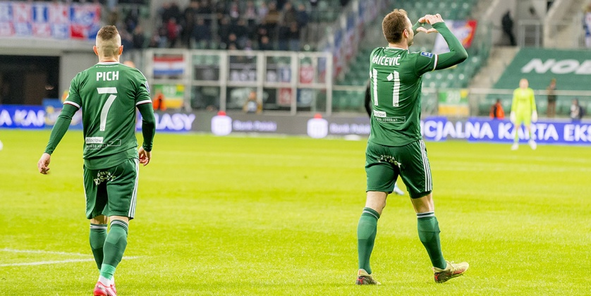
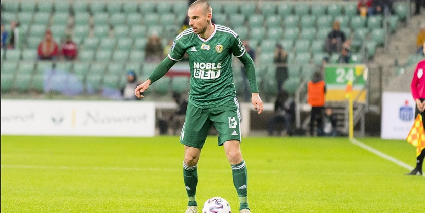
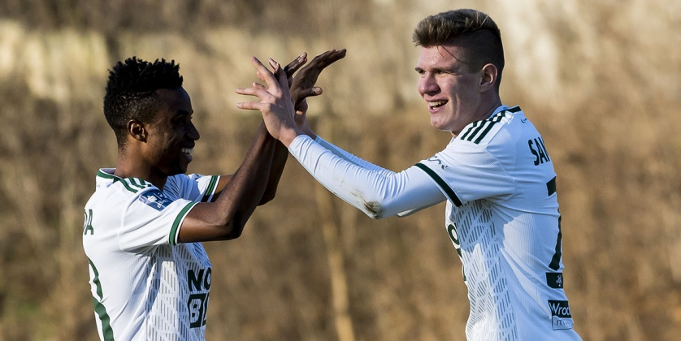

Klubowe aktualności
Mecz o wysoką stawkę
 W 24. kolejce PKO Ekstraklasy Śląsk Wrocław uda się do Lubina, gdzie zmierzy się z miejscowym Zagłębiem. Wygrana w derbach może znacznie przybliżyć wrocławian do miejsca w górnej ósemce na koniec rundy zasadniczej.Początek rundy wiosennej wygląda obiecująco dla Śląska. Pięć punktów w trzech meczach to solidny start, jednak jeśli wrocławianie chcą być pewni miejsca w grupie mistrzowskiej na koniec rundy zasadniczej, to muszą wygrywać. Każde punkty są cenne, ale te zdobyte w derbowej rywalizacji, mają podwójne znaczenie. Zagłębie również bardzo potrzebuje punktów. Lubinianie nie rozpoczęli rundy wiosennej w najlepszym stylu. Dwie porażki i remis sprawiły, że zespół Martina Seveli z dorobkiem 29 punktów znajduje się dopiero na dwunastym miejscu w ligowej tabeli, tracąc w tej chwili do ósmej Wisły Płock cztery punkty. Czasu do końca rundy zostało coraz mniej i każde kolejne potknięcie może sprawić, że Zagłębie, zamiast grać z czołowymi zespołami, znajdzie się w dolnej ósemce...
Piłkarze KlubuFC w jedynastkach kolejki
 Dino Stiglec i Michał Chrapek znaleźli się w najlepszych jedenastkach 23. kolejki PKO Ekstraklasy! Obaj zostali wyróżnieni za mecz z Górnikiem Zabrze.Stiglec zdobył bramkę już w 3. minucie spotkania z Górnikiem Zabrze i pomógł drużynie odnieść niezwykle ważne zwycięstwo. Jego występ został doceniony i Chorwat znalazł się w jedenastce kolejki PKO Ekstraklasy, a także w drużynie kolejki wybieranej przez Canal+ i tygodnik "Piłka Nożna". Asystę przy bramce Dino zaliczył Michał Chrapek, który również został doceniony przez tygodnik "Piłka Nożna"....
Kadra KlubuFC na obóz na Cyprze
 27 zawodników zabierze na obóz w Ayia Napie trener Vitezslav Lavicka. Wrocławianie będą trenować na Cyprze od 19 do 29 stycznia.Drużyna wyruszy na obóz w sobotnią noc, a około godziny 6 wejdzie na pokład samolotu do cypryjskiej Larnak, skąd autokarem dojedzie do miejsca docelowego - Ayia Napy. Sztab WKS-u będzie miał do dyspozycji 27 zawodników...